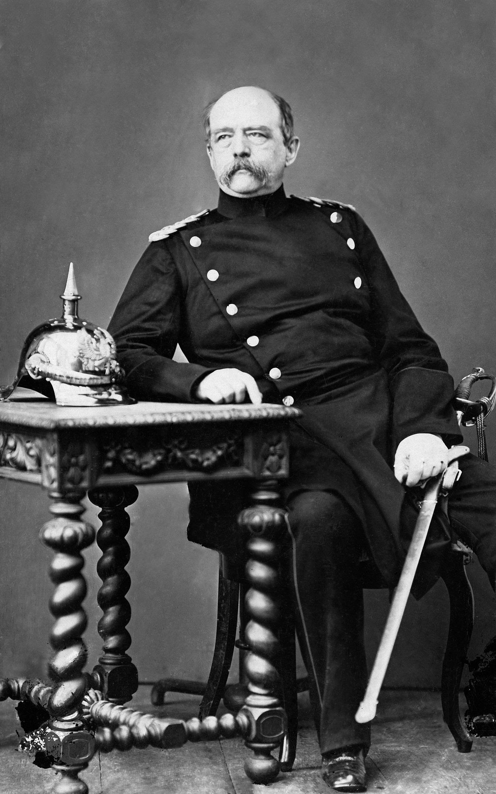
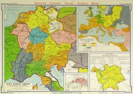
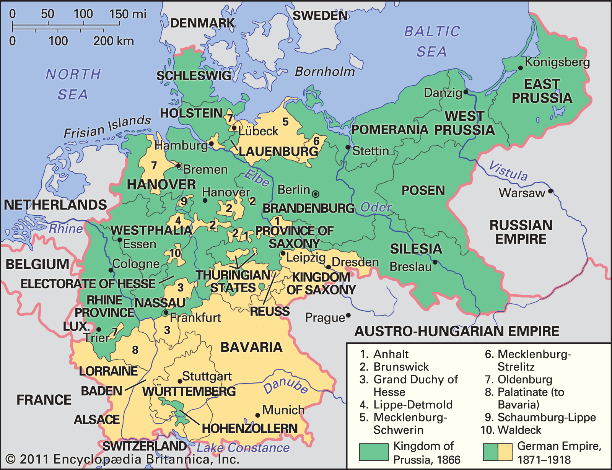
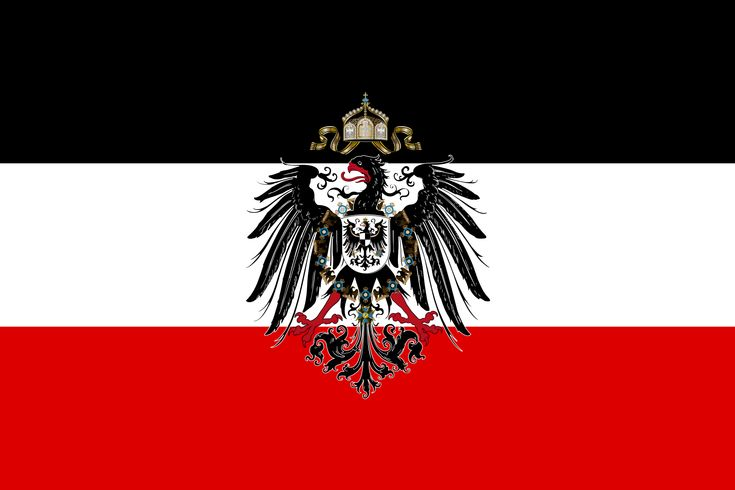
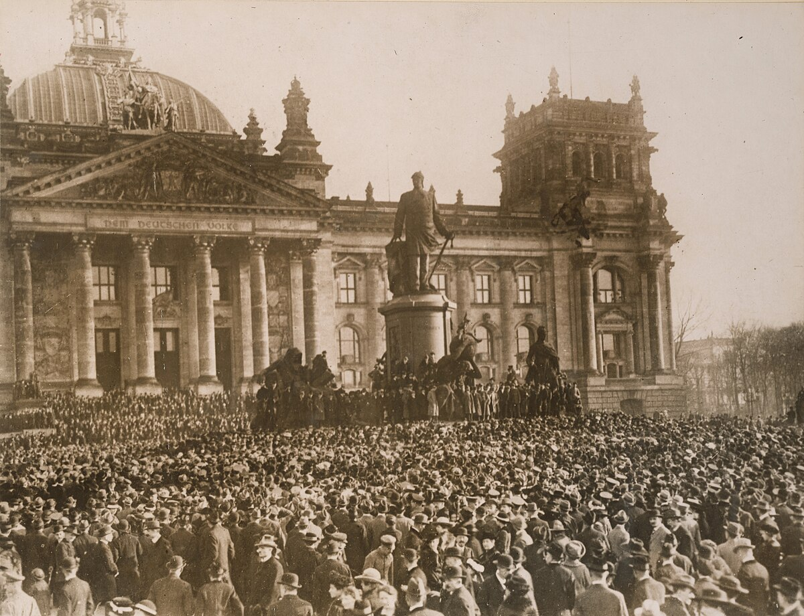
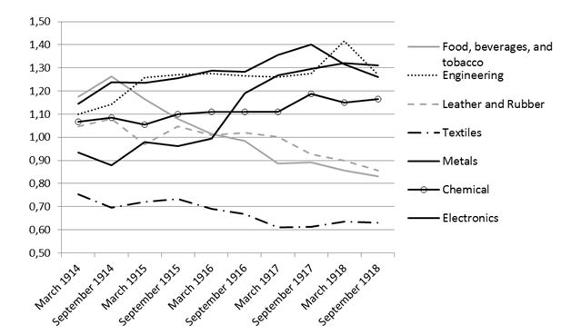
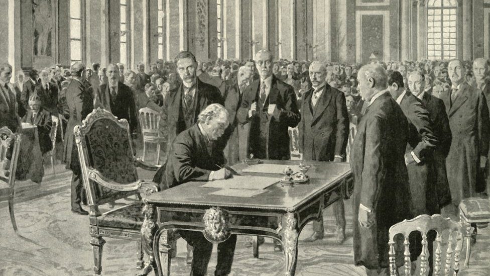
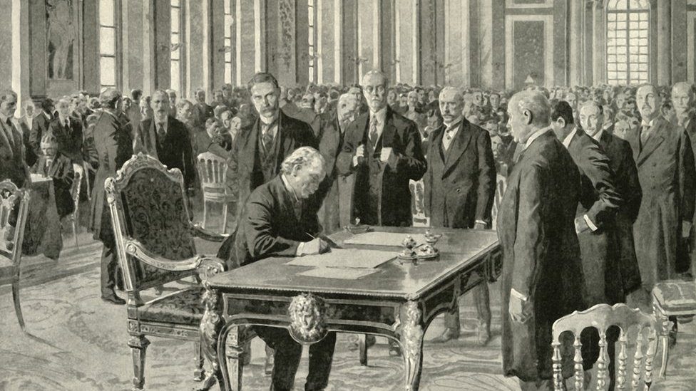

The Road to Unification (Pre-1871)
 The unification of Germany was a significant historical process culminating on January 18, 1871, when the German Empire was officially proclaimed at the Palace of Versailles in France. This event marked the political and administrative integration of most German-speaking states under Prussian leadership, with King Wilhelm I of Prussia declared as the German Emperor. The unification process unfolded over many years and was driven by key events and strategies: After the dissolution of the Holy Roman Empire in 1806, German-speaking territories remained divided into many autonomous states. The shared language, culture, and legal traditions kept a sense of unity alive among these regions. Intellectual and nationalist movements inspired by European liberalism and nationalism highlighted the idea of a unified German people and nation. Economically, the Prussian-led Zollverein customs union, established in 1818, helped integrate the German economies by reducing internal tariffs and fostering trade between the states. Chancellor Otto von Bismarck played a crucial role through his Realpolitik approach, using diplomacy and wars to advance unification: The Danish War (1864) secured the duchies of Schleswig and Holstein. The Austro-Prussian War (1866) resulted in Prussian dominance over northern Germany and the exclusion of Austria from German affairs. The Franco-Prussian War (1870–1871) was the final unifying catalyst. The southern German states, fearing French aggression, allied with Prussia. The victory over France and capture of Napoleon III boosted German nationalist sentiment. On January 18, 1871, in the Hall of Mirrors at Versailles, German princes proclaimed Wilhelm I as the German Emperor, formalizing the unification. The new German Empire was a federation of 25 states retaining some autonomy but united under Prussian leadership. This unification reshaped European power dynamics, creating a strong and industrialized German state. The legacy of German unification still influences Germany’s national identity and political structures.
The German Empire (1871–1918)
 
The German Empire, also known as Imperial Germany or the Second Reich, existed from its founding on January 18, 1871, until the November Revolution of 1918. It was established following the unification of the German states under Prussian dominance, excluding Austria. The empire consisted of 25 states including kingdoms, duchies, principalities, free cities, and an imperial territory, with Berlin as its capital. The King of Prussia became the German Emperor, and Otto von Bismarck became the first Chancellor.
The German Empire was a federal monarchy with a constitution that provided universal male suffrage for the Reichstag (parliament). However, real power was held by the Emperor and the Chancellor. Prussia dominated the empire politically, militarily, and economically, controlling around two-thirds of the population and territory. The empire rapidly industrialized and became a leading economic and military power, with advances in science and technology.
During its existence, Germany built a strong army and navy, became Europe’s largest economy by 1913, and gained global influence. However, the empire's authoritarian political structure and militarism contributed to tensions leading to World War I. The war ultimately ended in defeat for Germany, loss of territories, economic hardship, and the abdication of Emperor Wilhelm II in November 1918, ending the empire and leading to the establishment of the Weimar Republic.
Key historical points:
Founded January 18, 1871, after wars led by Prussia (against Denmark, Austria, France).
Constitution established universal male suffrage for the Reichstag and strong imperial powers for the Kaiser.
Prussia's dominance was constitutional and practical; the King of Prussia was also German Emperor.
Rapid industrialization led to economic growth and social changes.
World War I left Germany devastated economically and politically.
Ended with the abdication of Wilhelm II and the November 1918 Revolution.
This period is critical in German history as it transformed the region into a unified modern state and a great power, but also set the stage for the upheavals of the 20th century.
Society, Economy, and Politics
 
.
The German Empire (1871-1918) was marked by significant developments and complexities in society, economy, and politics that shaped its character and trajectory.
Society:
The empire experienced rapid industrialization and urbanization, leading to the growth of a diverse working and middle class. Social stratification was pronounced, with a traditional aristocracy and landowning elites maintaining power alongside the rising bourgeoisie and industrial capitalists. The Social Democratic Party (SPD) became a major political force advocating workers' rights amidst harsh labor conditions. Despite industrial growth, rural areas and traditional social structures remained influential, and conservative values were strong, particularly in Prussia.
Economy:
Germany’s economy grew rapidly to become the largest in Europe and one of the world's leading industrial powers by the early 20th century. Key industries included steel, coal, chemicals, and machinery, supported by an extensive railway network and banking system. The empire pursued policies of protectionism and state-supported industrialization, fostering technological innovation and global trade expansion. Krupp and other industrial conglomerates symbolized Germany’s economic might. Economic modernization, however, also brought social tensions between workers and industrialists.
Politics:
The political system was a federal monarchy under the Kaiser (Emperor), with the Chancellor appointed by the Kaiser wielding significant executive authority. While the Reichstag was elected by universal male suffrage, its powers were limited. Real power resided with the Emperor and Chancellor, and the bureaucracy and military held significant influence. Prussia dominated the political landscape. Political life featured struggles among conservatives, liberals, socialists, and nationalists. Opposition from the SPD and tensions between the monarchy and emerging democratic sentiments grew until World War I, which further destabilized the empire and ended with the 1918 Revolution.
These facets collectively illustrate a powerful yet politically conservative empire grappling with modernization and social change, setting the stage for dramatic shifts in 20th-century Germany.
On the Eve of World War I


.
On the eve of World War I, the German Empire was a major European power but faced significant internal and external challenges.
Internally, Germany was a rapidly industrializing society with a strong economy, but political tensions were rising. The empire remained an authoritarian monarchy with significant power concentrated in the hands of Kaiser Wilhelm II and the military elite. Although the Reichstag was elected by universal male suffrage, it held limited power, which created friction between emerging democratic forces, like the Social Democrats, and the conservative establishment. Social tensions also increased due to the rapid growth of the working class and demands for social reform.
Economically, Germany was thriving as the leading industrial nation in Europe, with powerful industries in steel, coal, chemicals, and manufacturing. However, the benefits of growth were unevenly distributed, and class tensions persisted.
On the international stage, Germany had built a powerful military and navy, provoking rivalries with other great powers, particularly Britain, France, and Russia. The empire pursued an aggressive foreign policy aimed at expanding its influence and safeguarding its interests, including colonial ambitions and naval expansion, which contributed to an atmosphere of mounting tensions and alliances in Europe.
In summary, by 1914, Germany was strong yet politically rigid and socially strained, with aggressive militarism and diplomacy, which, combined with a complex alliance system, helped set the stage for the outbreak of World War I.
Aftermath of World War I
.jpg) 

.
The aftermath of World War I was a period of profound change and upheaval for Germany. The war ended in 1918 with the abdication of Kaiser Wilhelm II and the collapse of the German Empire. In its place, the Weimar Republic was established, facing numerous challenges from the outset.
Politically, the Weimar Republic struggled with instability, as various factions vied for power. The new government was seen by many as a product of defeat and was met with hostility from both the far left and far right. The Treaty of Versailles, signed in 1919, imposed harsh reparations and territorial losses on Germany, fueling resentment and economic hardship.
Economically, Germany faced hyperinflation in the early 1920s, leading to widespread poverty and social unrest. The Great Depression further exacerbated these issues, resulting in high unemployment and the rise of extremist political movements, including the Nazi Party.
Socially, the post-war period saw significant changes, including advances in women's rights and cultural experimentation. However, these developments were often overshadowed by the political and economic crises that plagued the Weimar Republic.
In summary, the aftermath of World War I marked a tumultuous period for Germany, characterized by political instability, economic hardship, and social change, ultimately setting the stage for the rise of Adolf Hitler and the Nazi regime.